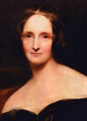

(1797 – 1851)

Yazdığı tek bir romanla edebiyat tarihine geçmiştir. Mary Wollstonecraft Shelley. "Frankenstein" romanında 'Doktor Victor Frankenstein' üzerinden modern insanın mükemmellik arayışını ve 'Canavar' üzerinden de yalnızlığı ve yalıtılmışlığı büyük bir başarıyla işleyen yazar, gotik edebiyatın başyapıtlarından birini ortaya koyarak bu romanıyla ölümsüzleşti.
Edebiyat tarihinin en tanınan karakterlerinden Frankenstein'ın Canavarının yaratıcısı Mary Wollstonecraft Godwin Shelley, 30 Ağustos 1797'de Londra'da doğdu. Babası William Godwin radikal siyasal görüşleriyle tanınan (felsefi anarşizmin kurucularından) bir yazar ve yayıncı, annesi Mary Wollstonecraft ise dönemin etkili bir kadın hakları savunucusuydu. Annesi doğumdan kısa süre sonra ölünce, Shelley babası tarafından büyütüldü ve doğal olarak ondan ve arkadaş çevresinden oldukça etkilendi. Baba William kısa süre sonra Marry Jane Clairmont ile evlendi ve ikisinin çocukları bir arada yaşadı. Özel öğretmenler tarafından eğitilen Shelley antik klasikleri okuyarak ve Fransızca, İtalyanca ve Latince öğrenerek yetişti. Çocukluğunun büyük bölümünü kitap okuyarak, hikayeler yazarak geçiren Shelley on altı yaşındayken dönemin en gözde romantik şairlerinden Percy Bysshe Shelley'e âşık oldu. Percy Shelley'in evli olması nedeniyle Avrupa'ya kaçmak zorunda kaldıklarında Shelley henüz on yedi yaşındaydı. Babası William Godwin bu ilişkiye karşı çıktı. 1815 yılında çiftin kızları Clara doğdu, ancak birkaç haftadan fazla yaşamadı. İki sevgili Percy'nin eşinin 1816'da ölümünden sonra Londra'ya dönüp evlendi.
Shelley, başyapıtı olan Frankenstein'ı 1816 yazında İsviçre'de oldukları bir dönemde yazmaya başladı. Uzun yolculuklar sırasında birbirlerine anlattıkları hayalet hikayeleriyle besleniyor, ancak konuyu felsefi bir zemine de oturtmak istiyordu. Romantizmin içinden çıkan, ancak ona bir alternatif olan gotik akımın en önemli örneklerinden olan kitapta insanın mükemmelliğe olan saplantısının onu yıkıma da götürebileceği tezi işleniyordu. Frankenstein ya da Modern Prometheus 1818 başlarında yayımlandı. Romanın doğuşunda İngiltere'deki sanayi devriminin, Locke ve Hobbes gibi düşünürlerin etkilerini de görmek mümkündür. Frankenstein kuşaktan kuşağa bir korku klasiği olarak aktarılsa da öyküde korkudan çok daha fazlası vardır. Katil, canavar denilen yaratık ve yaratıcısı Dr. Frankenstein kurbandır aslında. Modern çağa ve rasyonel aklın egemenliğine karşı romantik başkaldırının metaforudur Frankenstein. Yani toplum dışına itilen, kendi savaşını veren ve bu savaşta yenilen insanların acıklı öyküsüdür.
Mary Shelley'nin bu romanını Mathilda (1819), Prosperpine ve Midas (1820) adlı romanları izledi. 1822 yılında eşini bir tekne kazasında kaybeden Shelley, eşinin vasiyeti üzerine cesedini Viareggio'da deniz kenarında yaktırdıktan sonra Londra'ya döndü. Sonraki birkaç yılı kocasının tüm şiirlerini derlemeye ve dipnotlarla yayımlamaya ayıran Mary Shelley, sonunda 1824'te Percy Bysshe'nin Tüm Şiirleri adlı kitabı yayımladı.
Londra'ya yerleşen Shelley, gazete ve dergilerde çıkan yazılarının yanı sıra Valperga (1823) adlı romanını yayımladı. En tanınan ikinci romanı Son İnsan ise 1826'da yayımlandı.
1 Şubat 1851 tarihinde evinde ölen Mary Wollstonecraft Shelley, Bournmeouth'ta toprağa verildi.
Seçme Yapıtları: Frankenstein (1818 – İthaki Yayınları, 2009), Son İnsan (1826)